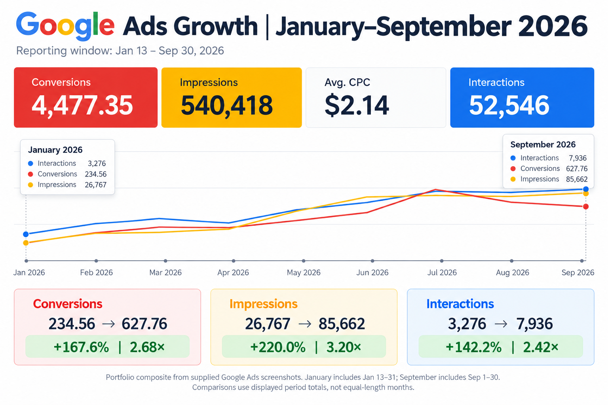
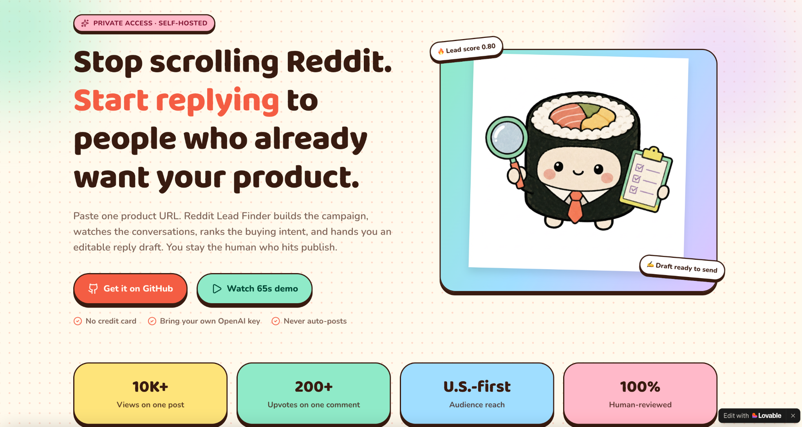
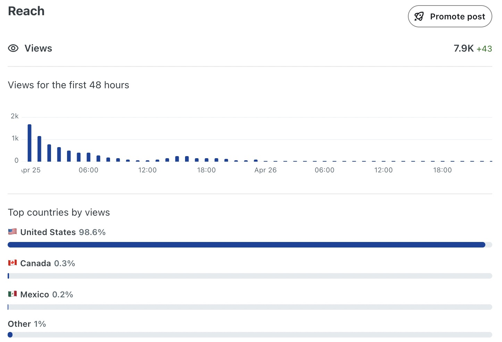
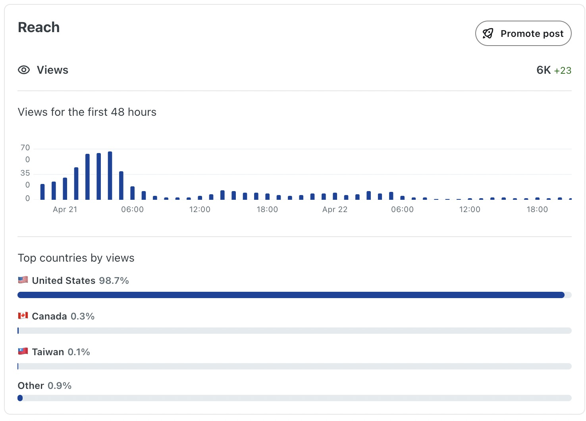
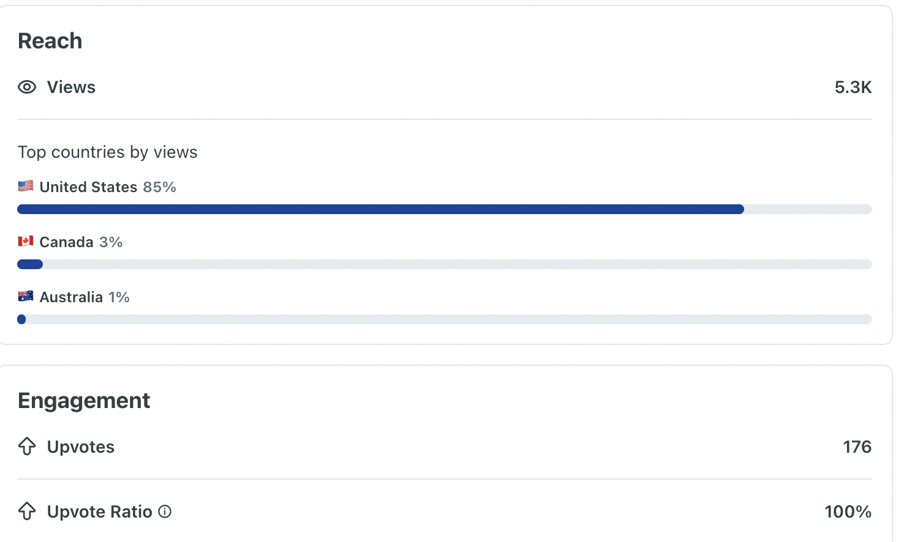
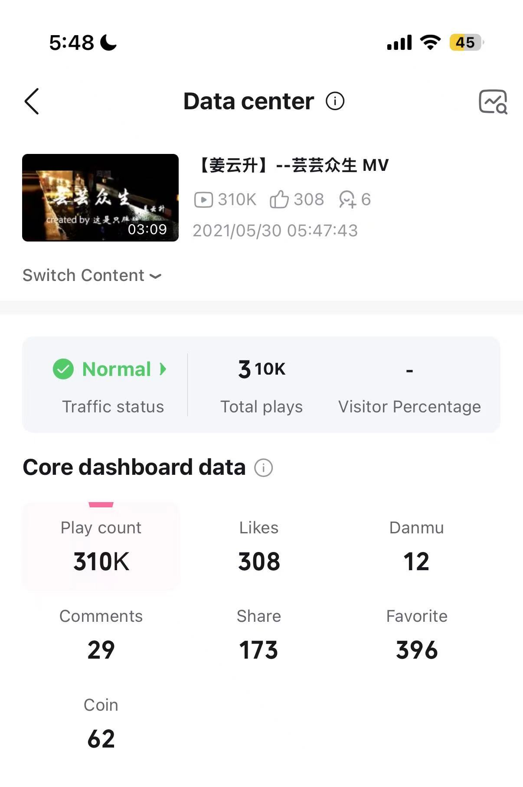
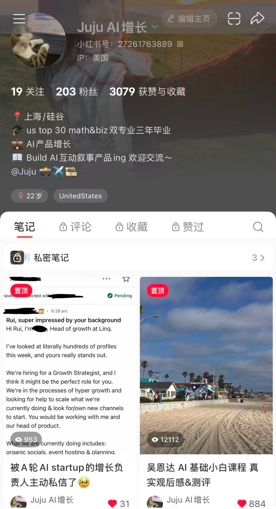

Bay Area · Growth & Product Marketing
I turn user insight
into content
and growth.
I connect product understanding, hands-on content creation and data-informed growth. I find the angle, make and distribute the content, then use audience response and product behavior to guide the next iteration.
Product × marketingContent & distributionData & experimentationAI workflows
CORE STRENGTHConnecting product & marketing
ANALYTICAL FOUNDATIONUCSD · Probability & Statistics + Business Economics
HANDS-ON EXECUTIONContent, distribution, campaigns & workflows
TOOLKITHubSpot · Apollo · Clay · Google Ads · n8n
GROWTH EXECUTION · PAID ACQUISITION
Run the campaigns.
Understand the results.
I managed Google Ads across markets, refined keywords and creative, and built reporting that connects campaign performance with transactions and operating context.
GOOGLE ADS · JANUARY–SEPTEMBER 2026CAMPAIGN MANAGEMENT · ANALYSIS · AUTOMATION
2.68×reported conversions
3.20×impressions
2.42×interactions

Displayed totals cover unequal periods. Platform-reported conversions.
Operate the campaigns
Manage paid acquisition across markets, refine keywords, test creative and review performance to inform campaign decisions.
Connect ads to the business
Cross-check Google Ads, GA4 and WooCommerce. Connect spend with actual transactions, refunds and local course availability.
Make the workflow repeatable
Build monitoring, AI-assisted diagnostics and execution logs, with human review for campaign actions.
View source screenshots
January and September snapshots from the same Ads view.
Inside the Ads workflow
My work notes document a live campaign-pause test, followed by performance analysis, approval handling and execution logs. AI-assisted analysis, rule-based actions and human decisions each have a defined role.
My wider campaign-management scope included approximately $800K in annual media budget across Search and YouTube. That scope is separate from the selected Ads report above.
AUTOMATION + PRODUCT MARKETING
Reddit Lead Finder
Find potential customers automatically on Reddit.
I turned my own acquisition workflow into an open-source, self-hosted product. It discovers relevant conversations, ranks buying intent and prepares replies for human review, reducing repetitive research so I can spend more time on judgment, messaging and interaction. I also created its positioning, landing page and demo.
Product URL→Relevant conversations→Buying-intent score→Human-reviewed reply
~80%estimated reduction in manual prospecting time
Open sourcePublic repository; self-hosted deployment

COMMUNITY DISTRIBUTION · SELECTED REDDIT WORK
Create content people engage with.
My Reddit content has reached 10K+ views and 200 upvotes on a single post. Selected analytics below show additional post-level reach, a predominantly U.S. audience and community response.
10K+views on a single Reddit post
200 upvotes on a single post.
Content creation, distribution and community response.
98.6% U.S. audience by views

View original analytics ↗98.7% U.S. audience by views

View original analytics ↗5.3K views · 100% upvote ratio

View original analytics ↗How the work connects
I can build an acquisition tool, explain its value and work directly in the distribution channel. That combination connects product marketing with practical growth execution.
Separate post snapshots; peak results reported above.
CONTENT SAMPLE · PRODUCT WALKTHROUGH
Turn a product workflow into a clear demo.
Product walkthrough of an earlier version. Current setup is in the repository.
My contribution: concept, workflow design, positioning, landing-page messaging and demo production with AI tools.
GROWTH EXECUTION · B2B ACQUISITION
Give every good lead a path to revenue.
I built the path from customer research to prospecting, outreach and booking. My work connected acquisition strategy with the day-to-day follow-up that moves a deal forward.
ROLE: GROWTH OPERATORHUBSPOT · APOLLO · CLAYCONTEXT: B2B SERVICES
CUSTOMER DATA → ICP
Find the right accounts
Use historical HubSpot customers to define an ICP. Prioritize company type, size and geography in Apollo, then validate companies and enrich relevant contacts with Clay.
Output: a segmented, qualified prospect listTARGETING → CONVERSATION
Make the outreach relevant
Connect account research to segmented email outreach, reply handling and follow-up. Give each opportunity enough context for a useful customer conversation.
Output: a reason to engage and a clear next actionCRM → BOOKING
Keep the deal moving
Track opportunities and follow-ups in HubSpot. Coordinate quotes, training requirements and booking details, connecting the commercial conversation to delivery.
Output: a visible owner and next stepOBSERVED BUSINESS RESULT~300% B2B revenue growth in three months
I owned the acquisition workflow and follow-up improvements. This result reflects the wider B2B operation during that period; it is not isolated outbound attribution.
See the CRM workflow and handoffs
Workflow reconstruction showing the decisions and handoffs, with customer records omitted.
Qualified accountCompany fit, relevant contact, source, reason for outreach
Active conversationNeed, timing, participant count, next action, follow-up owner
Booking & fulfillmentQuote status, training requirements, payment status, delivery handoff
Transferable skills: ICP definition, data quality, segment-specific messaging, follow-up discipline and revenue visibility. A developer product needs its own account signals and activation definition.
Additional analysis & search work
Six-market analysis: analyzed regional and cohort performance in R; researched personas, competitors and user feedback for an AI productivity product.
SEO / GEO: built search-intent and comparison pages, submitted pages to Google Search Console and structured product content around user questions.
SUPPORTING WORK · REVENUE INTELLIGENCE
Know what the spend
is actually producing.
I cross-checked Google Ads, GA4 and WooCommerce, improved conversion-value tracking from fixed values to actual transactions, and built market-level reporting for growth decisions.
See true profitability
Compare acquisition cost with completed orders, refunds and revenue.
Prioritize markets
Identify where to scale, investigate, pause, or protect supply.
Shorten the feedback loop
Cross-check Google Ads, GA4 and WooCommerce before acting on performance changes.
Google AdsWooCommerceAttributionRefundsNet ROAS
GROWTH INTELLIGENCEMarket-level ROAS Dashboard
ILLUSTRATIVE DEMO DATAAD SPEND$32.8K+6.2% vs. prior period
PAID NET REVENUE$81.6K+14.8% vs. prior period
NET ROAS2.49×+0.18 improvement
PAID ORDERS1,0323.1% refund rate
Net ROAS by marketLast 30 days
Priority actionsAI-assisted summary
- SCALEMarket D has strong ROAS and available capacity.
- REVIEWMarket C spend rose while order value declined.
- PROTECTPause two campaigns with no near-term supply.
CREATIVE WORK · PERSONAL PROJECTS
I make the content,
then pay attention
to the response.
My work spans music video editing, travel content, nonprofit video and product walkthroughs. These personal projects show hands-on creation and distribution alongside my professional growth work.
BILIBILI · MUSIC VIDEO EDIT
30K+ plays
Music video editing and publishing.

REDNOTE · AI COURSE REVIEW
10K+ views
An introductory AI course review published on my AI and growth account.

TIKTOK · TRAVEL VIDEO
200+ likes
A San Diego beach video framed around a scenic spot just minutes from campus.
MORE FORMATS I HAVE CREATEDNonprofit video · WeChat Channels · Product demos
Different contexts, the same task: decide what matters, make it understandable and give the audience a reason to watch.
Watch a product demo ↗PRODUCT MARKETING · CONTENT & GROWTH · AI WORKFLOWSLet’s make product value